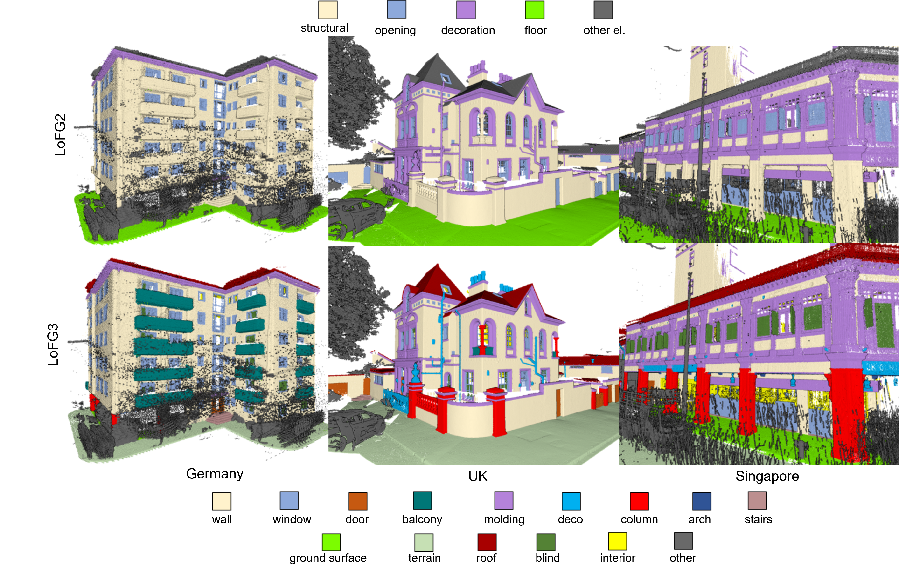
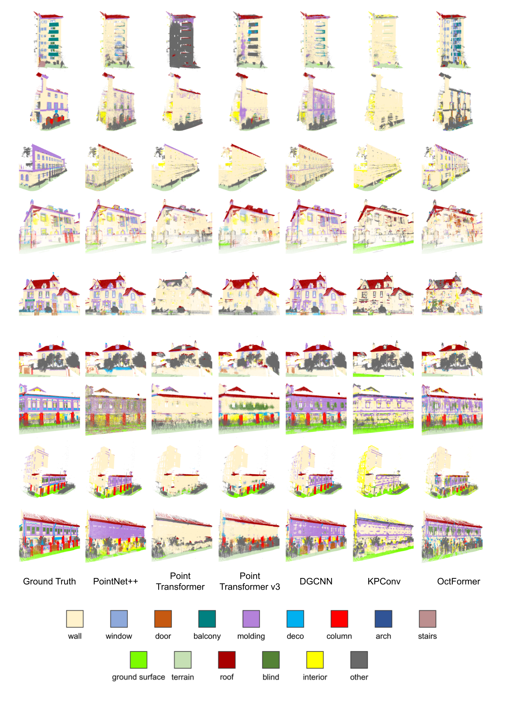
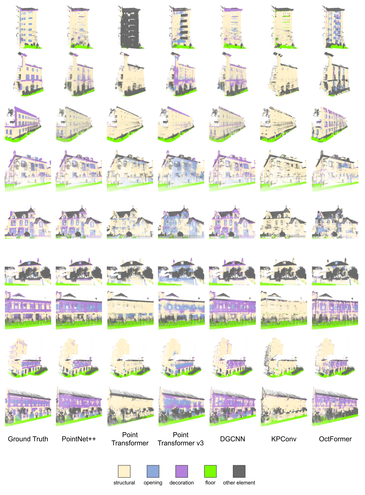

*Equal contribution
ECCV 2026
A quick walkthrough of the dataset and benchmark.
Globally consistent semantic digital twins require centimeter-accurate and geographically transferable 3D facade segmentation. However, progress in facade parsing is limited by the lack of large-scale, standardized benchmarks for evaluating cross-domain generalization. Existing datasets are geographically narrow, semantically inconsistent, or insufficiently precise. We introduce UnderOneFacade, the largest cross-country and cross-continent 3D facade benchmark to date, comprising centimeter-accurate point clouds with hierarchical, harmonized, and architecturally grounded semantic labels totaling 2.7 billion annotated points. Through a systematic evaluation of representative point-, graph- and transformer-based architectures, we show that current methods struggle to recognize fine-grained architectural elements and degrade significantly across geographic domains, with the best models achieving only up to 33 IoU on the fine-grained LoFG3 benchmark. By combining geometric precision with standardized semantics at unprecedented scale, UnderOneFacade establishes a rigorous benchmark for developing robust and transferable 3D segmentation models. The dataset, evaluation scripts, and pretrained models will be released upon publication.
A short overview of the UnderOneFacade dataset and benchmark.



Figure left: Qualitative facade segmentation results on UnderOneFacade on the LoFG3. We visualize predictions of representative architectures across scenes from different countries. Rows show example facades, while columns correspond to different segmentation models. Despite correct segmentation of dominant structures such as walls and roofs, models struggle to consistently recognize fine-grained facade elements, including windows, doors, and decorative components. These examples illustrate the challenges posed by long-tailed semantics and cross-country architectural variability.
Figure right: Qualitative facade segmentation results on UnderOneFacade at the LoFG2 level. Compared to the LoFG3 level, the aggregated LoFG2 hierarchy allows models to more reliably capture dominant structural regions such as structural or floor. However, inconsistencies remain in regions corresponding to facade openings and decorative structures, which are often confused with surrounding structural elements. These examples illustrate that although semantic aggregation improves visual consistency, segmentation errors persist due to architectural variability and the long-tailed distribution of facade components.
Table: Per-class F1 performance comparison on the UnderOneFacade dataset (Results under an updated, method-specific training protocol. See more details in the main paper.). The best result in each row is shown in bold.
| Metric/Class | PointNet++ | OctFormer | Superpoint Transformer | PTv1 | PTv3 | KPConv | DGCNN | GrowSP |
|---|---|---|---|---|---|---|---|---|
| LoFG3 (fine facade semantics) | ||||||||
| OA | 60.9 | 57.9 | 60.2 | 62.5 | 58.3 | 43.7 | 43.7 | 90.6 |
| μP | 47.2 | 45.1 | 48.0 | 48.7 | 45.3 | 41.5 | 39.7 | 36.4 |
| μR | 41.6 | 38.9 | 46.6 | 42.5 | 37.8 | 32.8 | 46.9 | 31.3 |
| μF1 | 42.5 | 39.8 | 45.3 | 44.1 | 37.8 | 31.4 | 38.1 | 31.3 |
| μIoU | 29.7 | 27.3 | 32.2 | 31.5 | 27.3 | 21.0 | 25.7 | 25.4 |
| wall | 70.5 | 71.9 | 69.9 | 73.6 | 65.2 | 37.8 | 49.1 | 70.3 |
| window | 37.2 | 28.1 | 34.2 | 58.6 | 5.1 | 30.1 | 28.2 | 4.6 |
| door | 13.9 | 10.3 | 17.7 | 17.3 | 16.4 | 0.5 | 24.2 | 13.9 |
| balcony | 19.3 | 41.7 | 51.0 | 48.9 | 6.4 | 3.1 | 21.2 | 5.7 |
| molding | 46.8 | 9.6 | 32.5 | 47.2 | 8.7 | 33.8 | 24.3 | 28.3 |
| deco | 10.0 | 29.5 | 12.3 | 4.3 | 9.2 | 4.3 | 4.7 | 5.5 |
| column | 45.7 | 29.5 | 49.1 | 32.7 | 43.3 | 49.0 | 39.8 | 5.4 |
| arch | 42.6 | 31.5 | 43.5 | 30.5 | 52.8 | 31.1 | 64.1 | 0.9 |
| stairs | 6.5 | 1.3 | 1.8 | 0.2 | 0.6 | 2.1 | 6.8 | 0.0 |
| ground surface | 54.1 | 51.6 | 45.9 | 53.9 | 57.9 | 39.4 | 61.4 | 0.0 |
| terrain | 70.4 | 67.7 | 72.8 | 73.1 | 75.0 | 72.0 | 71.7 | 89.8 |
| roof | 68.8 | 70.3 | 71.5 | 63.5 | 69.3 | 50.6 | 55.8 | 76.9 |
| blinds | 19.5 | 23.3 | 27.8 | 14.4 | 12.7 | 2.0 | 15.5 | 5.4 |
| interior | 61.9 | 53.6 | 78.4 | 77.0 | 74.6 | 46.7 | 45.7 | 4.0 |
| other | 70.7 | 63.4 | 70.4 | 66.1 | 69.5 | 68.1 | 59.2 | 96.1 |
| LoFG2 (coarse facade semantics) | ||||||||
| OA | 70.2 | 66.5 | 67.7 | 71.1 | 65.2 | 63.2 | 59.5 | 94.0 |
| μP | 67.2 | 63.9 | 62.7 | 68.9 | 60.5 | 59.1 | 58.4 | 68.3 |
| μR | 66.2 | 60.7 | 60.7 | 68.8 | 58.4 | 58.7 | 59.2 | 57.1 |
| μF1 | 66.2 | 61.9 | 61.3 | 68.5 | 58.3 | 58.3 | 57.6 | 59.1 |
| μIoU | 52.6 | 47.6 | 48.3 | 54.1 | 46.2 | 45.9 | 43.2 | 51.6 |
| floor | 93.3 | 69.7 | 70.3 | 90.6 | 94.0 | 94.9 | 87.9 | 73.0 |
| decoration | 45.1 | 44.3 | 23.4 | 50.5 | 30.4 | 25.4 | 38.5 | 11.6 |
| structural | 73.1 | 60.7 | 45.8 | 73.5 | 66.1 | 63.8 | 64.5 | 19.6 |
| opening | 44.3 | 87.8 | 90.4 | 52.4 | 25.3 | 35.2 | 35.3 | 93.9 |
| other | 75.4 | 71.7 | 76.5 | 75.3 | 75.6 | 72.3 | 61.9 | 97.5 |
@InProceedings{UnderOneFacade2026,
author = {Wang, Yi and Wang, Fan and Gyawali, Prabin and Xu, Ziyang and Klimkowska, Anna
and Jing, Yixiong and Yang, Wanru and Biljecki, Filip and Holst, Christoph
and Busam, Benjamin and Sheil, Brian and Wysocki, Olaf},
title = {UnderOneFacade: Worldwide Facade Semantic Segmentation Benchmark Dataset},
booktitle = {Proceedings of the European Conference on Computer Vision (ECCV)},
year = {2026}
}